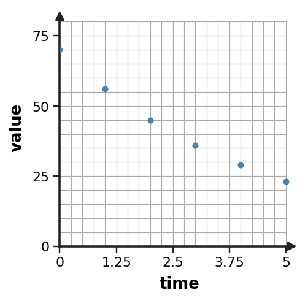
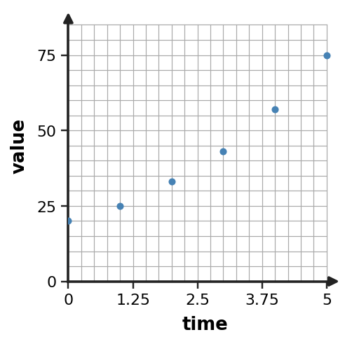

1. Use successive ratios to assess whether an exponential model is reasonable for the outputs 12, 18, 27, 40.5.
2. Inspect the scatter plot. Is an exponential model plausible? Describe the visual pattern and whether it suggests growth or decay.

3. The data do not have exactly equal ratios. Explain why an exponential model might still be useful, and name one check you would make before trusting it.
| time | value |
|---|---|
| 0 | 100 |
| 1 | 82 |
| 2 | 66 |
| 3 | 55 |
| 4 | 44 |
4. A car-value model gives value versus years after purchase. Describe the context restriction that narrows the otherwise all-real mathematical domain.
5. Interpret both parameters in the model $C(t)=600(0.9)^t$ in context language: what does the leading value mean, and what does the factor mean?
6. Two candidates are $L(x)=80-10x$ and $E(x)=80(0.8)^x$. Which model better matches the data, and what evidence supports the choice?
| x | observed y |
|---|---|
| 0 | 80 |
| 1 | 64 |
| 2 | 51 |
| 3 | 41 |
| 4 | 33 |
7. The table compares observed data with an exponential model. Compute observed minus predicted for each row. Do the small positive and negative differences suggest a major one-sided bias?
| x | observed | predicted |
|---|---|---|
| 0 | 101 | 100 |
| 1 | 79 | 80 |
| 2 | 65 | 64 |
| 3 | 50 | 51.2 |
8. Estimate a reasonable exponential multiplier from the data by comparing consecutive output ratios.
| x | y |
|---|---|
| 0 | 80 |
| 1 | 112 |
| 2 | 157 |
| 3 | 220 |
9. Build an exponential model $y=a(b)^x$ from the table. Identify both parameters.
| x | y |
|---|---|
| 0 | $\displaystyle 14$ |
| 1 | $\displaystyle \frac{35}{2}$ |
| 2 | $\displaystyle \frac{175}{8}$ |
| 3 | $\displaystyle \frac{875}{32}$ |
10. A data model is $M(t)=80(\frac{3}{4})^t$. Predict $M(3)$ and interpret the result as a model prediction.
11. Use successive ratios to assess whether an exponential model is reasonable for the outputs 10, 14, 25, 31.
12. Inspect the scatter plot. Is an exponential model plausible? Describe the visual pattern and whether it suggests growth or decay.

13. The ratios in the data are not exactly equal. Explain whether an exponential model could still be reasonable, and name one check you would use before trusting the model.
| time | value |
|---|---|
| 0 | 200 |
| 1 | 170 |
| 2 | 146 |
| 3 | 122 |
| 4 | 105 |
14. An investment model uses years since an account was opened. Distinguish the mathematical domain from the inputs that make sense in this situation.
15. Interpret both parameters in the model $P(t)=25(1.2)^t$ in context language: what does the leading value mean, and what does the factor mean?
16. Two candidate models are $L(x)=96-16x$ and $E(x)=96(0.8)^x$. Which model better matches the observed data? Support your choice with the pattern in the table.
| x | observed y |
|---|---|
| 0 | 96 |
| 1 | 77 |
| 2 | 61 |
| 3 | 49 |
| 4 | 39 |
17. The table compares observed data with an exponential model. Compute observed minus predicted for each row. Do the residuals suggest a strong one-sided bias?
| x | observed | predicted |
|---|---|---|
| 0 | 51 | 50 |
| 1 | 39 | 40 |
| 2 | 33 | 32 |
| 3 | 25 | 25.6 |
18. Estimate a reasonable exponential multiplier from the data by comparing consecutive output ratios.
| x | y |
|---|---|
| 0 | 90 |
| 1 | 135 |
| 2 | 202 |
| 3 | 304 |
19. The height of an object is modeled by $H(t)=-2(t-6)^2+40$. Interpret the vertex in the context.
20. A height model is $H(t)=-3(t-3)(t-7)$. Find the intercepts where $H(t)=0$ and interpret the nonnegative times in context.
21. A fountain-stream model starts above ground, rises to a maximum height, then reaches ground level at a positive horizontal distance. Name the quadratic features that represent the starting height, maximum height, and landing distance.
22. Factor the monic trinomial $\displaystyle x^{2} - x - 6$ completely.
23. Factor $\displaystyle 4x^2+4x-3$ completely.
24. Find two integers whose product is $\displaystyle 12$ and whose sum is $\displaystyle 7$. Explain how this pair would help factor a quadratic trinomial.